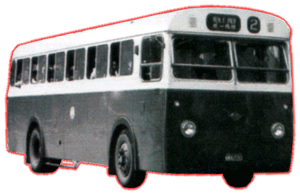
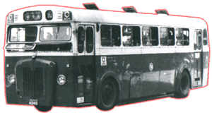

Guy
- Arab UF
  |
引擎 Engine
容積 Engine Capacity 波箱 Gearbox 車身 Body Build 體積 Volume 載客量 Passenger 服役年份 Year |
: Gardner 5HLW (95bhp) Gardner 6HLW (有前置冷卻水箱) : 不詳 : Wilson-type Pre-selective with Fluid-flywheel : Duple (Midland) : 9093L X 2438W X 2921H (mm) : L & S 66 (Total) : 1954 - 1977 |
所謂 UF (Under Floor) 是指這車的引擎位置於車身地台之下兩車軸之間，有別於前置和後置設計。Arab UF 有 100 部，經常在有電車之地方出沒，南區則較少見。直到 1970 年，中巴把 16 部 UF 改為一人控制和換上較大馬力的引擎，繼續戰鬥至大約 77 年左右才功成身退。